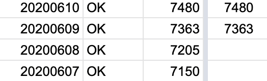
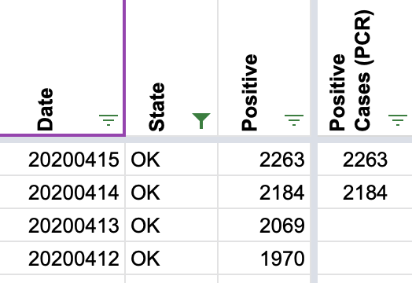

[OK] PCL Cases Backfill
Issue number 720
hmhoffman opened this issue on July 31, 2020 at 7:03 pm
Labels Historical Data not stale Backfill
Describe the Issue: We didn’t start recording pos. pcr cases for OK until 6/9. EORs from previous dates have a case number which is defined as “*Case: Meets confirmatory laboratory evidence.”. We can use this figure to backfill historical pcr cases up to 4/14 when they added to clear definition for the number.
Data Source: https://coronavirus.health.ok.gov/executive-order-reports
the-daniel-lin added the label Backfill on July 31, 2020 at 7:04 pm
the-daniel-lin added the label Historical Data on July 31, 2020 at 7:04 pm
the-daniel-lin added the label not stale on July 31, 2020 at 7:05 pm
MattHilliard closed the issue on August 3, 2020 at 12:09 pm
On 4/13, there is a note that the total includes 5 probable cases. Perhaps we could just subtract 5 from the total positives to account for that, but I suppose it doesn’t quite say explicitly that all the other cases are confirmed.
Before (point where Positive Cases (PCR) stopped): 
After (new point where Positive Cases (PCR) stops): 